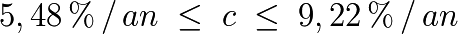
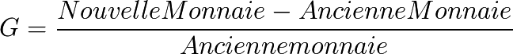

General considerations
Some orders of magnitude
An economic zone like the euro one has an average life span of eighty years in 2012, we obtain:

To give an idea of orders of magnitude, make a comparative on real data of 2010. Take the example of the euro zone with 10.000 billions of euros and 330 millions of citizens, optimized Universal Dividend would be included between:

and

Thus between 552€ per month and 928€ per month for a family of for persons.
Reality shows great disparities within the zone about the existence of a minimum and individual income because in France or in Germany we conditionally reach 450€ per month per individual (condition of age, of resource, etc…), compared to countries like Romania or Bulgaria, where there is a minimal salary of 130€ per month per individual, and without money allocated individually.
We are, in Europe, in a case of high spatial asymmetry which results to create high disparities and a transfer of economic activities in countries with high individual monetary allocation (discouraged to produce goods and monetized services), toward the countries with almost no individual monetary allocation. This returns by not recognizing the equality between individuals within a common economic zone.
If the ins and outs of monetary creation were presented to individuals of this community, and thus their own required approval to organize this common currency, they would realize the encountered difficulties in regards of ethic and fairness, of symmetry before the monetary creation, and they would not have accepted in such conditions.
In USA, the optimal universal dividend is calculated for about $ 15000 billion in circulation and 310 millions of residents for a 80 years life span. It would be between:

With these remarks, we will see later that the installation of an Universal Dividend can be progressive and does not have to be fixed on a given monetary state to be organized. The given numbers here aim to explain the mechanism, and to give orders of magnitude at the moment when the calculation is done. One must not forget that the monetary supply is not a fixed quantity, it evolves in space and time, and any measure must be understood as a local and instantaneous value only.
NB: In addition, Yoland Bresson points out that the GDP is between two and three times the monetary supply at various stages, and we may consider that an unconditional basic income could be based on two to three times the Universal Dividend, that is in 2010 approximately 400€ per month per citizen in Europe, or $600 per month per citizen in United States. We then make the difference between the Universal Dividend as an individual monetary creation and the Basic Income, which includes the Universal Dividend and a share of redistribution. We can also apply the temporal symmetry principle not only to the immaterial circulating currency but also to the property rights of the prime matter globally, which leads to at least double the transmitted value in the time if we consider that the money reflects the existing value. But this consideration is beyond the remit of the RTM itself.
These remarks associated to a range of possible values for “c”, leave a range of acceptable values in 2012 for a Basic Income (and not only a Universal Dividend) between 200€ and 800€ per month per Citizen for Europe and $300 * to $1200 per month per Citizen in United States. These data from 2010/2012 are obviously* to be calculated again depending on population, life expectancy and monetary mass variations.
About value
The argument that the monetary supply’s inflation would be unethical, because it would depreciate what individuals own is not consistent by the global and local analyses.
First of all, the argument that life expectancy, and the fair monetary creation towards generations shrugs off the stance from a temporal point of view, before our descendants who should not be considered as excluded of the process to our benefit.
Then, even from a local point of view the argument is flawed before a subtle analyse.
For an individual or an individual collective “X” among the N of the economic zone who owns a fraction f of the entire monetary supply. X receives therefore a fraction of the dividend c / N which means that its ratio of personal monetary “gain” is:

So:

And thus:

What will make its ratio of personal gain G more than c is that he owns less than M/N, equals to c, if he owns exactly M/N money, or less than c if he owns more than 1/N of money.
It is therefore from the quantity of money owned one can estimate be beneficiary or not.
Numeric example: A owns 50, B owns 200, there are other individuals in this monetary community and the monetary supply is 1000, for a community of ten members. Assuming a life expectancy such as the UD is 5% per year.
Annual Universal Dividend allocated to anyone will be 5% × 1000 / 10 = 5. A will have then 55, and B 205. Locally, A has benefited of 5/50 = 10% of additional money, instead of 50 / 1000 = 5% and B owns 205 / 1050 = 19.52% of the monetary supply against 200 / 1000 = 20% before distribution. B has seen his share of money reduced because he owned before the distribution more than 1000 / 10 = 100 of money, whereas for A, under the average, the opposite happens.
However, if X owns more than M/N of money, so more than the average, the monetary supply that he doesn’t own will be, on average, by individual, mechanically less than M/N, so the prices adjusted downward by local deflation.
Also, although his quantity of relative money won’t grow as fast as the global mass, he can benefit from lower prices. In addition, if he owns less than M/N of money, the prices could have a tendency to increase for the opposite reason, and what was won relatively to the money will be lost relatively to the values.

Graphic example with three individuals, having a monetary distribution of 300, having a Universal Dividend, then. The evolution of their relative situation is different depending on their relative share of money owned by each.
In relative theory where analysis includes relation between parts and overall they form, Local + Non-Local = Global. This means that everything chosen individually as an opposite effect on the rest of the economy. If the money is stocked, it is an effect which tends to lower prices where the money becomes scarce, and if the money flows, it is an effect which tends to raise them (at constant levels of production, excluding innovation. The innovation preventing the comparison in time, see the principle of relativity).
Finally, the value is obviously not the money. The value, for which X can pretend, includes the goods he owns, which includes admittedly the money, but also the goods he could buy with his money, as well as the money he could get by selling its goods.
Thus, the arbitration of X could depend only on his personal choices about the quantity of money he wants to include in its goods or not, its good he wants to hold, sell, or buy, and certainly not only about the quantity of money he owns. Moreover, in an innovative economy where the members are encouraged to create new goods and services, what will be value tomorrow is to a large extent totally unpredictable.
{kind=link}
But furthermore, before and after the distribution of a Universal Dividend, prices of the non-monetary goods can evolve too. There is, thus, no possible, simple and generalizable conclusions about the monetary distribution, if only that it is not favorable nor unfavorable for all, all the time, but its beneficial effect or not depends on the concerned individual and how the monetary surplus will be distributed on one hand, and used by the individuals in the other hand.
Also there is no certainty possible about what should be done in the part of “protecting” one’s capital, which is here a purely relative value (the custom office Rousseau would be surprised to know the estimation of his capital done in 2010, and Maxwell even more if he still owned “intellectual property rights” on his fabulous theory about electromagnetism).
Moreover the Universal Dividend is without absolutely no prejudice, in terms of personal gains or loss, with “value”. It is the individual choices which determinate the impact that could have the increasing of the monetary supply on the individual basket of values.
About the symmetry of the value created by individuals
One should really understand symmetry argument in its entirety. Members of a set-up monetary system were beneficial of the early monetary creation, but or not necessarily “rich” of this particular money. They are mostly rich of the goods, the skills, the fundamental nature of human being able to trade with his siblings and to have a unique opinion about what is value or not. Yet the value which exists inside this community of individuals has no reason to prime on the value estimated by the future entrants.
This is spatially and temporally true. That is when two communities decide to integrate with one and the other, and so to merge their money, one should not to prime on the other before the individual monetary creation, and when a generation replace another, one should not suppose that values realized by next generation would be less legit than the previous.
That is why it is a relative theory of money. There is no individual referential privileged about the measure of the value, each individual constitute an acceptable reference to get a measure, and only the money, contractually admitted by the members of the economic zone is a common measure of value.
It is the same as in relativistic physics, we have between two relative references only one common measurement standard which is the speed of light, from which observers agree, and transform their view of the phenomenon (time, space, etc…) in relation to the chosen reference. Yet this measure, although common, is not “absolute” as a result of the expansion of the Universe. The speed of light in relation to the volume of the Universe decreases over time.
It is the same for the money coming with a growing economy in the space-time. Succeeding human generation are building on each other to create higher or different values in a process of quantitative and/or qualitative progress (which can also be translated to a reduction of some flux by optimization of their usage).
Even if case of stagnation or regression (we can think of the case of North American Amish who refused to integrate technical “progress” in their community), the community enriches itself in terms of knowledge, lived experience, which in the long term will constitute without any doubt a value related to the experimental knowledge so acquired whatever the interpretation. It makes no doubt that the economic value for the Amish differs significantly from one of another community.

Amish farmer fertilizing his field (Wikimedia)